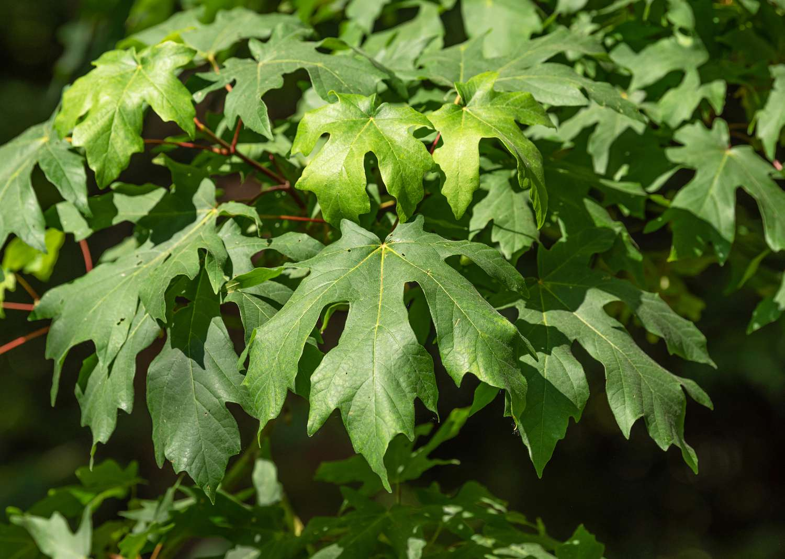

The Maple is a majestic deciduous tree celebrated for its vibrant autumn foliage and sweet sap.
Iconic for its lobed leaves, it is the primary source of maple syrup and high-quality timber.
It grows with a wide, spreading canopy that provides excellent shade in temperate landscapes.
The tree is deeply symbolic of strength and endurance across many Northern Hemisphere cultures.
Plant Attributes & Uses
Scientific Classification
Family: Sapindaceae
Genus: Acer
Species: A. saccharum
Global Spread
Native primarily to the temperate regions of North America, Europe, and parts of Northern Asia.
Preferred Climate
Thrives in cool, temperate climates with distinct seasons and cold winters for sap production.
Commercial Uses
Major source of maple syrup, high-grade hardwood for furniture, and ornamental landscaping.
Traditional Uses
Indigenous cultures used the inner bark for medicinal infusions and the sap as a primary sweetener.
Health Benefits
Pure maple syrup contains antioxidants and essential minerals like manganese and zinc.
Garden Information
Hardiness: Zones 3–8
Climate Zones: Temperate, Continental
Exposure: Full Sun to Partial Shade
Soil Type: Deep, well-drained, slightly acidic
Water Needs: Moderate (consistent moisture)